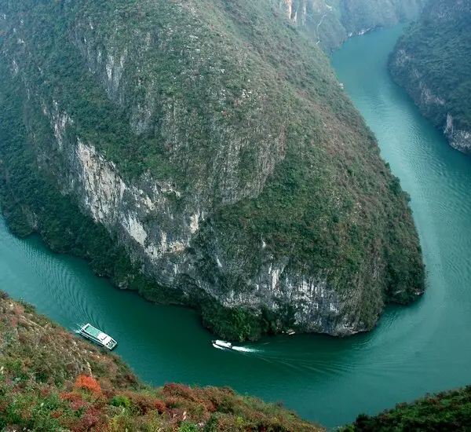

Top 3 Nature Spots in Chongqing
Three Gorges (Yangtze River)

Introduction
The Three Gorges—Qutang Gorge, Wu Gorge, and Xiling Gorge—are a 193-kilometer stretch of the Yangtze River, a 2-hour cruise from Chongqing. Known for their dramatic landscapes (towering limestone cliffs, misty peaks, and winding river bends), they’re one of China’s most iconic natural attractions. The highlight of the cruise is Qutang Gorge (the narrowest, with 1,000-meter-tall cliffs), Wu Gorge (lined with “Twelve Peaks” shaped like mythical figures), and Xiling Gorge (home to the Three Gorges Dam, a modern engineering marvel). You can take a 1-day cruise (round-trip from Chongqing) or a 3-day cruise (down to Yichang) to soak in the views—keep an eye out for local fishermen on small boats and ancient stone carvings on cliff faces.
Best Time to Visit
Autumn (October–November): Clear skies, blue river water, and mild temperatures (18°C–25°C)—no fog or heavy rain.
Morning (8:00 AM–10:00 AM): Soft light on cliffs; mist lifts to reveal peak views.
Price
1-Day Cruise (Round-Trip): 280–450 CNY/adult (includes lunch, guide, and dam visit); 140–225 CNY/children (1.2m–1.4m).
3-Day Cruise (Chongqing to Yichang): 1,200–2,500 CNY/adult (varies by cabin type; includes meals and shore excursions).
Nanshan Botanical Garden

Introduction
Nanshan Botanical Garden, on Nanshan Mountain (15 kilometers south of downtown), is a 1,800-acre garden showcasing over 4,000 plant species—from cherry blossoms and azaleas to tropical palms and bamboo groves. Divided into 10 zones (e.g., “Cherry Blossom Valley,” “Azalea Garden,” “Tropical Plant Greenhouse”), it’s a paradise for nature lovers. The highlight is the “Cherry Blossom Valley” (blooms March–April) and the “Viewing Platform” (offers panoramic views of Chongqing’s skyline and the Yangtze River below). You can hike the gentle trails (suitable for all ages) or take a shuttle bus (20 CNY/adult) to cover more ground. In autumn, the garden’s maple trees turn red, adding vibrant color to the mountain.
Best Time to Visit
Spring (March–April): Cherry blossoms and azaleas in full bloom; 15°C–22°C.
Autumn (November): Maple trees turn red; clear views of the city and river.
Price
Entry Fee:30 CNY/adult; 15 CNY/students (with ID); free for kids under 1.2m.
Shuttle Bus (Garden Internal): 20 CNY/adult (unlimited rides for 1 day).
Tropical Greenhouse Extra Fee: 10 CNY/adult (for the indoor tropical plant zone).
Ciqikou Ancient Town (Riverside Area)

Introduction
Ciqikou Ancient Town, 12 kilometers west of downtown, is a 1,000-year-old town built along the Jialing River—but its “natural charm” lies in its riverside lanes, old banyan trees, and stone bridges that blend with the surrounding hills. Unlike busy city centers, the town’s riverside area is quiet: you can walk along the stone-paved “River Road,” watch local elders fish in the Jialing River, or sit on a bench under a banyan tree (some over 100 years old) to enjoy the river breeze. The area is also home to small tea houses where you can sip jasmine tea and listen to traditional Sichuan opera. It’s a peaceful escape from Chongqing’s urban buzz, with natural beauty rooted in its riverfront setting.
Best Time to Visit
Afternoon (3:00 PM–5:00 PM): Cooler temperatures; golden light on the river.
Winter (December–January): Quiet (fewer tourists); misty river views add charm.
Price
Entry Fee:Free (the riverside area and town are open to the public).
Tea House Visit: 20–40 CNY/person (includes a cup of tea and river views).
Boat Ride (Jialing River): 50 CNY/person (30-minute ride, departs from the town’s pier).